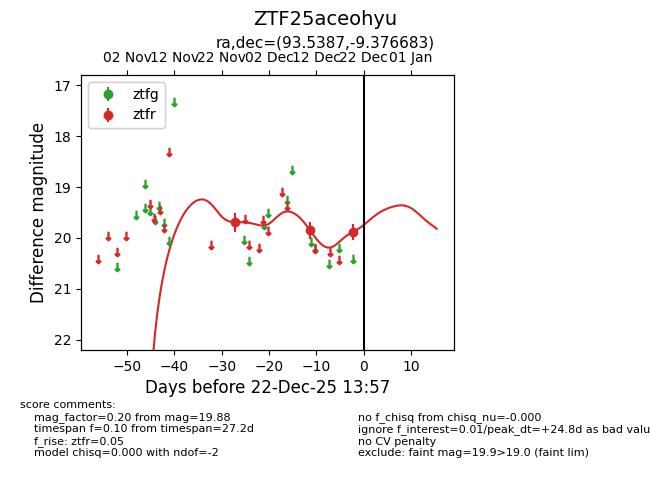
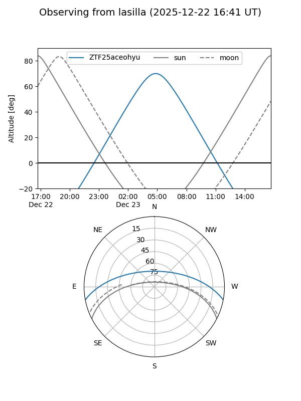
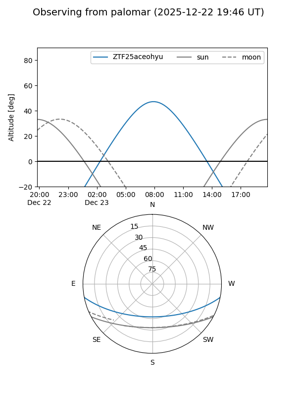

ZTF25aceohyu
Target ZTF25aceohyu at 2025-12-20 09:39
Aliases and brokers:
FINK: fink-portal.org/ZTF25aceohyu
Lasair: lasair-ztf.lsst.ac.uk/objects/ZTF25aceohyu
ALeRCE: alerce.online/object/ZTF25aceohyu
alt names
ZTF25aceohyu (ztf,fink_ztf)
Coordinates:
equatorial (ra, dec) = 93.5387,-9.37668
equatorial (HMS+DMS) = 06:14:09.28,-09:22:36.06
galactic (l, b) = (217.1693,-12.50410)
Flags:
Photometry:
last ztfr=19.88
3 ztfr detections
Lightcurve

Visibility


Additional plots